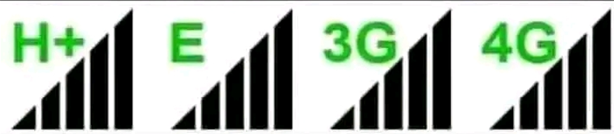

E , H , H+ , G , 2G , 3G , 4G ,
What are they ?
E in mobile Signal
Letter E stands for EDGE ( Enhanced Data Rates for GSM Evolution ) This technology lies somewhere in between 2G and 3G technology . EDGE is faster than GPRS but still not
good enough to brouse the Internate . it takes lot of time in loading websites when your signal bar is showing E
letter alongside . Typically EDGE provides a data rate of 400 kbit/second but in ideal conditions data ratte of upto
1Mbit/second can also be achieved .
.png)
G in mobile Signal
Letter G stands for GPRS ( General Packet Radio Service )GPRS is considered to be the second generation (2G) mobile technology . it is the slowest and oldest
among all mobile technologies . it is mainly good enough for sending text massage using apps like
Whatsapp . Data rates in GPRS are between 56 and 114kbit/second
.
H in mobile Signal
Letter H stands for HSPA ( High Speed Packet Access. ) it is an enhanced from of 3G technology. HSPA provides higher data transfer rates than the basic
3G . HSPA can provide peak data rates of up to 14 Mbit/S for downlink and 5.76 Mbit/s for uplink .
H+ in mobile Signal
Evolved High Speed Packet Access The network created before the emergence of 4G. of offers the fastest maximu speed of all 3G
networks (including 3G and H or HSPA
3G in mobile Signal
3G means the third generation of mobile telephone technology . Typically 3G provides data transfer rates 384 kbit/second . But depending upon how
it is implemented in various networks, the data rate can go upto 42 Mbits/second
Usually 3G is faster than EDGE and you can easily browse websites and stream music .
LTE/4G in mobile Signal
stands for fourth generation of the mobile network ,and is also called LTE or long Term Evolution 4G connection works as good as a wi‐fi connection of your home or office. with
such a connection you can do everything on your mobile that you asn do on your desktop .